library(MsExperiment)
library(Spectra)
library(xcms)
library(MsBackendMgf)
library(RColorBrewer)
library(pheatmap)
library(vioplot)
# Parallel processing setup
nb_cores <- 4
register(MulticoreParam(nb_cores)) # Change to SnowParam(4) if on WindowsSetup and Data Import
We load the xcms ecosystem. Spectra handles the MS data, and MsExperiment manages the experimental design.
Define Experiment Metadata
We define the file paths and grouping manually here. In a production pipeline, you would read this from a CSV file.
# Define filenames and metadata
pd <- data.frame(
file_name = c("Interlab-LC-MS_Lab2_A15M_Pos_MS2_Rep1.mzML",
"Interlab-LC-MS_Lab2_A15M_Pos_MS2_Rep2.mzML",
"Interlab-LC-MS_Lab2_A15M_Pos_MS2_Rep3.mzML",
"Interlab-LC-MS_Lab2_A45M_Pos_MS2_Rep1.mzML",
"Interlab-LC-MS_Lab2_A45M_Pos_MS2_Rep2.mzML",
"Interlab-LC-MS_Lab2_A45M_Pos_MS2_Rep3.mzML",
"Interlab-LC-MS_Lab2_A5M_Pos_MS2_Rep1.mzML",
"Interlab-LC-MS_Lab2_A5M_Pos_MS2_Rep2.mzML",
"Interlab-LC-MS_Lab2_A5M_Pos_MS2_Rep3.mzML",
"Interlab-LC-MS_Lab2_M_Pos_MS2_Rep1.mzML",
"Interlab-LC-MS_Lab2_M_Pos_MS2_Rep2.mzML",
"Interlab-LC-MS_Lab2_M_Pos_MS2_Rep3.mzML",
"Interlab-LC-MS_Lab2_PPL_Pos_MS2_Rep1.mzML"),
sample_name = c(rep("A15M", 3), rep("A45M", 3), rep("A5M", 3),
rep("M", 3), "PPL"),
sample_desc = c("A15M_R1", "A15M_R2", "A15M_R3", "A45M_R1", "A45M_R2",
"A45M_R3",
"A5M_R1", "A5M_R2", "A5M_R3", "M_R1", "M_R2", "M_R3"
, "PPL_R1"),
replicate = c(1, 2, 3, 1, 2, 3, 1, 2, 3, 1, 2, 3, 1)
)
# Set path (Adjust this to your local folder!)
# These files were downloaded from the MassIVE ftp server.
path <- file.path("/data", "massive-ftp.ucsd.edu", "v04", "MSV000090156",
"peak", "mzml", "POS_MSMS", "Lab_2")
# Load data
mse <- readMsExperiment(file.path(path, pd$file_name), sampleData = pd)Initial quality control and filtering
Before processing, we check the Base Peak Chromatogram (BPC) to ensure chromatography looks good and identify empty time range.
# Define colors for plotting
col <- brewer.pal(length(unique(pd$sample_name)), "Set2")
names(col) <- unique(pd$sample_name)
col_sample <- col[pd$sample_name]
# Plot BPC
bpc <- chromatogram(mse, aggregationFun = "max")
plot(bpc, col = paste0(col_sample, 80), main = "BPC (Raw)", lwd = 2)
legend("topright", col = col, legend = names(col), lty = 1, lwd = 2)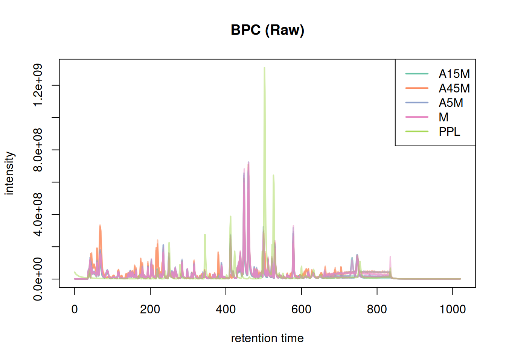
The chromatography is empty before 20s and after 850s. We filter the dataset to reduce processing time.
mse <- filterSpectra(mse, filterRt, c(20, 850))We can check again:
Show the code
# Plot BPC
bpc <- chromatogram(mse, aggregationFun = "max")
plot(bpc, col = paste0(col_sample, 80), main = "BPC (Raw)", lwd = 2)
legend("topright", col = col, legend = names(col), lty = 1, lwd = 2)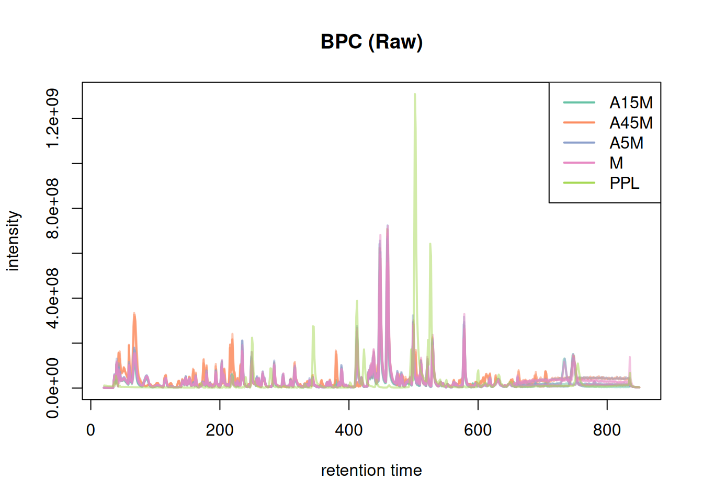
BPC and TIC aggregate data along the m/z dimension per spectrum (retention time) to compare the signal measured along the retention time. To compare the mass or ion content of the individual samples/measurement runs we in addition aggregate data along the retention time, for distinct m/z values.
#' bin mass peaks into into discrete m/z bins of 0.02 Da.
s_bin <- spectra(mse) |>
filterMsLevel(1L) |>
bin(binSize = 0.02)
#' combine all spectra within the same sample into a single spectrum
#' reporting the maximum intensity of all mass peaks with the same m/z bin
bps <- combineSpectra(s_bin, f = s_bin$dataOrigin, intensityFun = max)Backend of the input object is read-only, will change that to an 'MsBackendMemory'We have thus a single aggregated mass spectrum per sample. These base peak spectra are plotted below.
plotSpectraOverlay(bps, col = paste0(col_sample, 40), lwd = 2)
grid()
legend("topright", col = col, legend = names(col), lty = 1)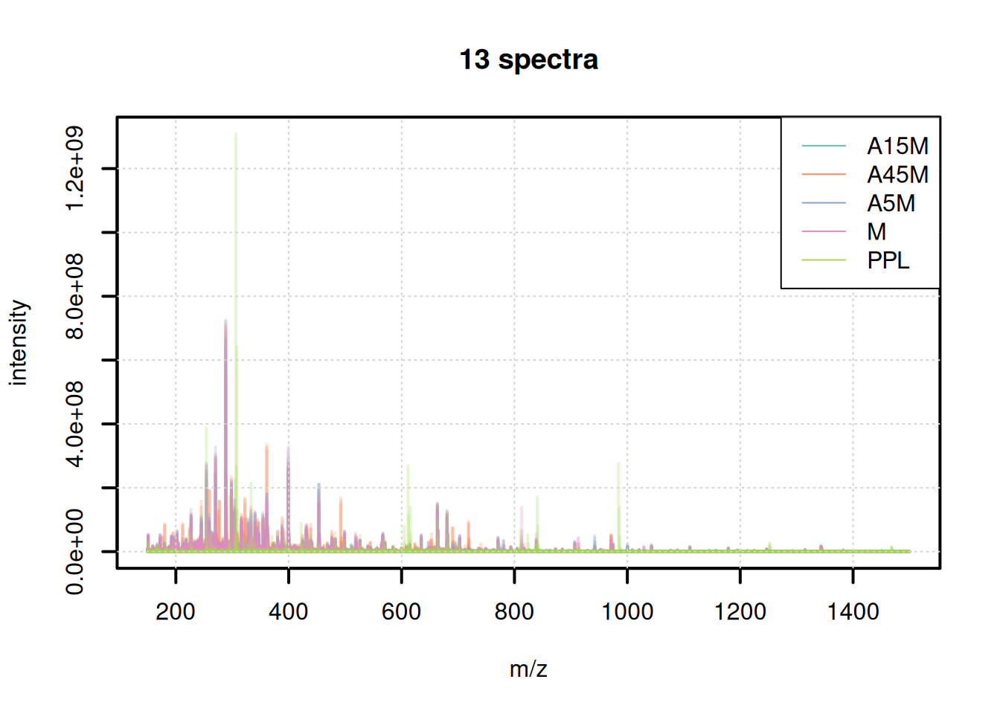
We can also use these aggregated spectra to calculate spectra similarity between the individual samples and cluster them.
sim <- compareSpectra(bps)
rownames(sim) <- colnames(sim) <- sampleData(mse)$sample_desc
pheatmap(sim)
A15M, A5M and M samples cluster together, separately from the A45M samples while the PPL_R1 sample has a distinct mass peak profile.
Peak Detection (CentWave)
We use the CentWave algorithm. The key parameters that needs to be adapted to any dataset are:
-
peakwidth: The range of widths (in seconds) of a chromatographic peak. -
ppm: Defines the maximum allowed deviation in m/z dimension of mass peaks in consecutive spectra considered to represent signal from the same ion.
peak-width setup
To define them we need to evaluate the raw data.
#' extract BPC
par(mfrow = c(2, 1), mar = c(0, 4.3, 1.5, 0.1))
bpc <- chromatogram(mse, aggregationFun = "max")
plot(bpc, col = paste0(col_sample, 80), lwd = 2)
grid()
#' identify a retention time region to extract
rtr_1 <- c(105, 130)
abline(v = rtr_1, lty = 2)
#' identify the m/z with the largest intensity in that region:
#' - restrict to MS1 data
#' - filter the MS data by retention time
#' - extract the MS data as a data.frame
tmp <- spectra(mse) |>
filterMsLevel(1L) |>
filterRt(rtr_1) |>
longForm(columns = c("mz", "intensity"))
#' define a m/z range around the m/z with largest intensity
mzr_1 <- tmp$mz[which.max(tmp$intensity)] + c(-0.005, 0.005)
#' extract an EIC for that RT and m/z region
eic_1 <- chromatogram(mse, rt = rtr_1, mz = mzr_1)
plot(eic_1, col = paste0(col_sample, 80), lwd = 2)
grid()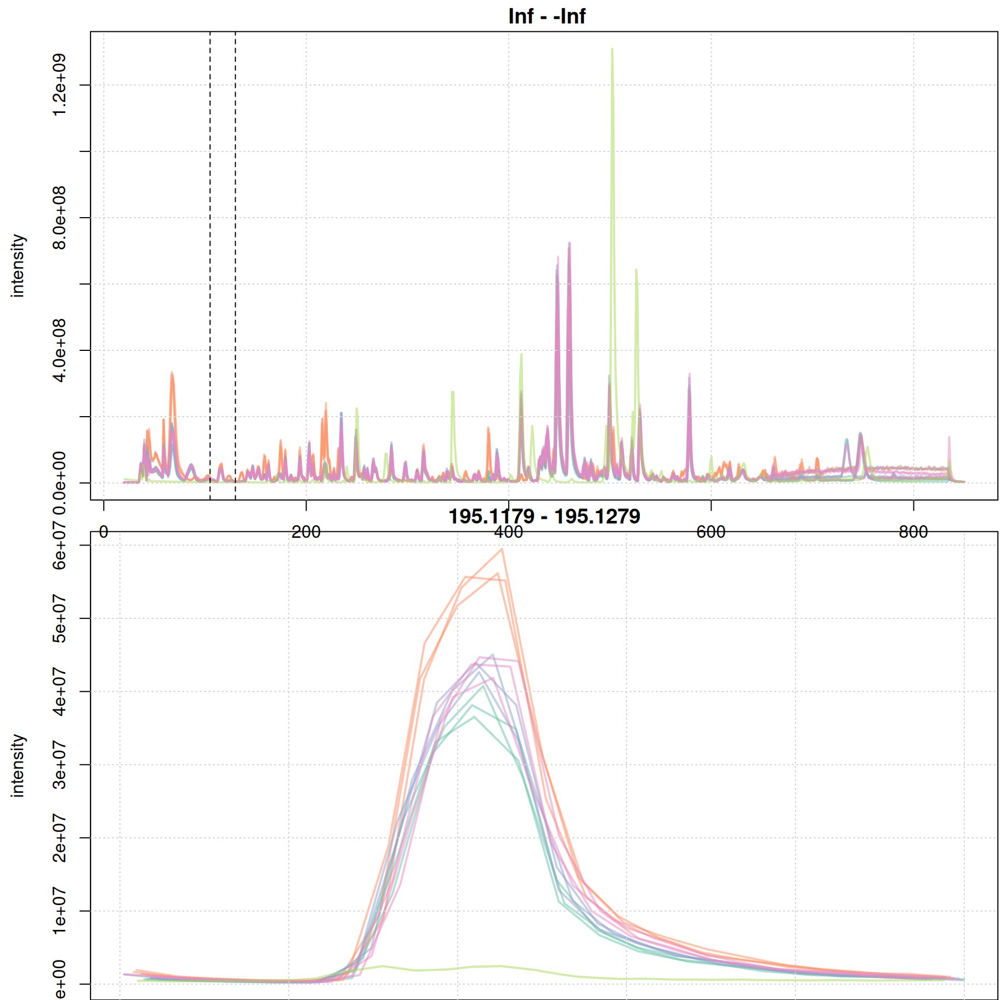
The width of this chromatographic peaks is about 8 seconds. We evaluate a second signal at the end of the chromatogram.
par(mfrow = c(2, 1))
plot(bpc, col = paste0(col_sample, 80), lwd = 2)
grid()
#' identify a region to extract
rtr_2 <- c(720, 770)
abline(v = rtr_2, lty = 2)
#' identify the m/z with the largest intensity in that region:
#' - restrict to MS1 data
#' - filter the MS data by retention time
#' - extract the MS data as a data.frame
tmp <- spectra(mse) |>
filterMsLevel(1L) |>
filterRt(rtr_2) |>
longForm(columns = c("mz", "intensity"))
#' define a m/z range around the m/z with largest intensity
mzr_2 <- tmp$mz[which.max(tmp$intensity)] + c(-0.005, 0.005)
#' extract an EIC for that RT and m/z region
eic_2 <- chromatogram(mse, rt = rtr_2, mz = mzr_2)
plot(eic_2, col = paste0(col_sample, 80), lwd = 2)
grid()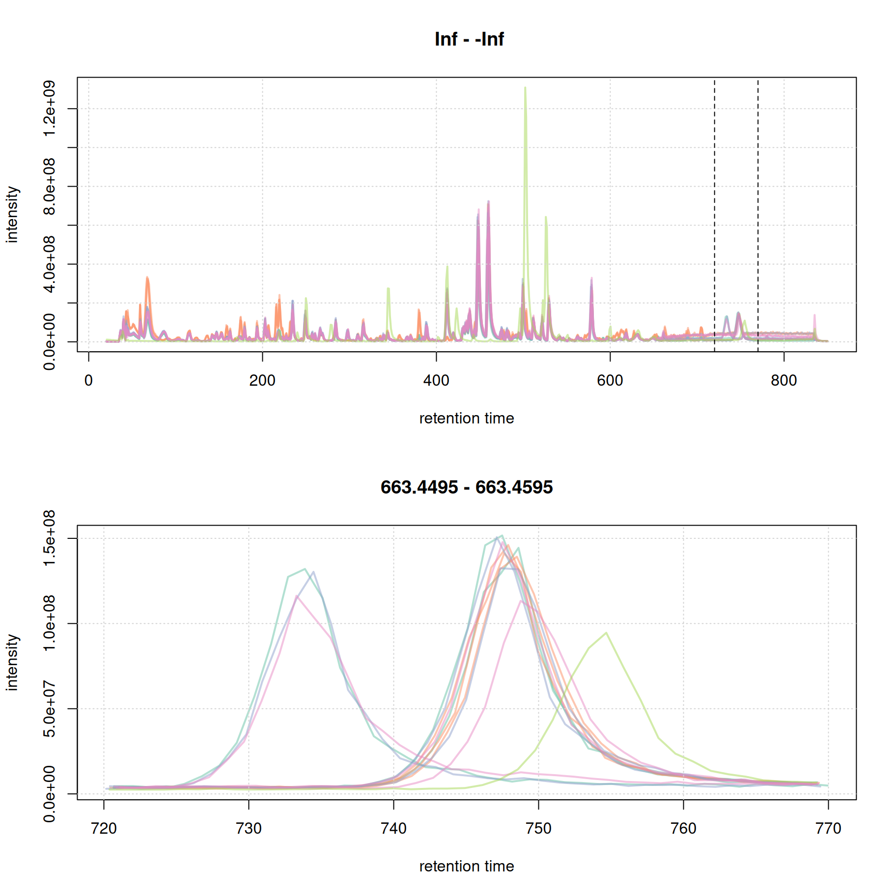
The width of the chromatographic peaks for that m/z slice seem to be around 15 seconds. Also, there seems to be a considerable shift in retention times between the samples.
we set the peak width below:
set_pw <- c(5,20) # peakwidth in seconds
mse[1L] |>
filterSpectra(filterMsLevel, 1L) |>
filterSpectra(filterRt, rt = rtr_1) |>
filterSpectra(filterMzRange, mz = mzr_1) |>
plot()
ppm setup
The individual mass peaks are shown in the lower panel in the plot above. For the present ion, the m/z values show a very low variance.
We evaluate the signal also for the second m/z - retention time window defined above.
mse[1L] |>
filterSpectra(filterMsLevel, 1L) |>
filterSpectra(filterRt, rt = rtr_2) |>
filterSpectra(filterMzRange, mz = mzr_2) |>
plot()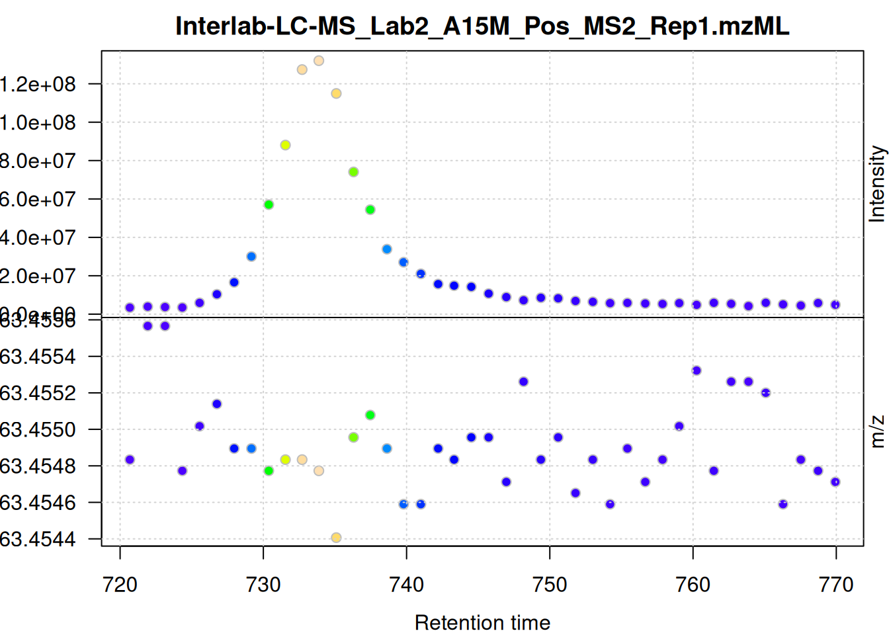
The scattering of m/z values looks larger, but is still below 0.001 Da. We nevertheless use a ppm = 20 for the present data set - as we do not assume that ions from different compounds elute at the same time with a difference in ppm lower than 20.
set_ppm <- 20Now we can run the peak detection with CentWave.
# Configure CentWave
cwp <- CentWaveParam(
ppm = set_ppm,
peakwidth = set_pw,
snthresh = 8,
mzdiff = 0.001
)
# Run Peak Detection
mse <- findChromPeaks(mse, param = cwp, chunkSize = nb_cores)In most cases it is also advisable to perform a peak postprocessing to remove artifacts of the centWave peak detection (e.g. overlapping or split peaks).
# Optional: Refine peaks (merge split peaks)
mse <- refineChromPeaks(mse, MergeNeighboringPeaksParam(expandRt = 1,
minProp = 0.75),
chunkSize = nb_cores)Reduced from 105113 to 93968 chromatographic peaks.We can check the results on our example EICs:
Show the code
eic_1 <- chromatogram(mse, rt = rtr_1, mz = mzr_1)Extracting chromatographic dataProcessing chromatographic peaksShow the code
eic_2 <- chromatogram(mse, rt = rtr_2, mz = mzr_2)Extracting chromatographic data
Processing chromatographic peaksShow the code
par(mfrow = c(2, 1), mar = c(0, 4.3, 1.5, 0.1))
plot(eic_1, col = paste0(col_sample, 80), lwd = 2)
grid()
legend("topright", col = col, legend = names(col), lty = 1, lwd = 2)
plot(eic_2, col = paste0(col_sample, 80), lwd = 2)
grid()
legend("topright", col = col, legend = names(col), lty = 1, lwd = 2)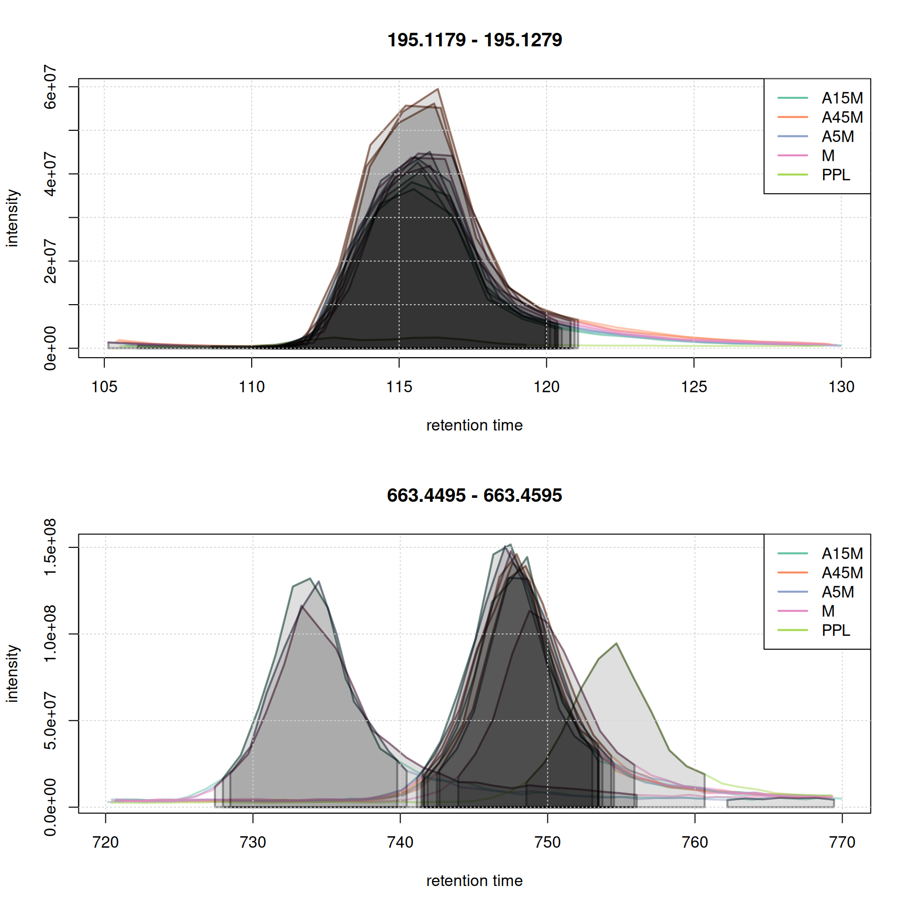
Evaluate peak-picking
Compare the number of identified peaks per sample as well as their m/z and retention time widths.
#' split the detected chrom peaks per sample
pk_list <- split.data.frame(
chromPeaks(mse, columns = c("mzmin", "mzmax", "rtmin", "rtmax")),
chromPeaks(mse, columns = "sample")[, "sample"])
#' calculate mz and rt widths
pk_list <- lapply(pk_list, function(z) {
cbind(z, mz_width = z[, "mzmax"] - z[, "mzmin"],
mz_width_ppm = (z[, "mzmax"] - z[, "mzmin"]) * 1e6 / z[, "mzmax"],
rt_width = z[, "rtmax"] - z[, "rtmin"])
})
#' plot the information
par(mfrow = c(3, 1), mar = c(0, 4.3, 1.5, 0.1))
barplot(unlist(lapply(pk_list, nrow)),
col = col_sample,
ylab = "peak count", main = "Peak detection summary, mse", xaxt = "n")
grid()
legend("top", horiz = TRUE, col = col, pch = 15,
legend = names(col))
par(mar = c(0, 4.3, 0, 0.1))
vioplot(lapply(pk_list, function(z) z[, "mz_width_ppm"]), outline = FALSE,
ylab = "m/z width [ppm]", xaxt = "n", line = 3,
col = col_sample)
grid()
vioplot(lapply(pk_list, function(z) z[, "rt_width"]),
ylab = "rt width [s]", col = col_sample, line = 3)
grid()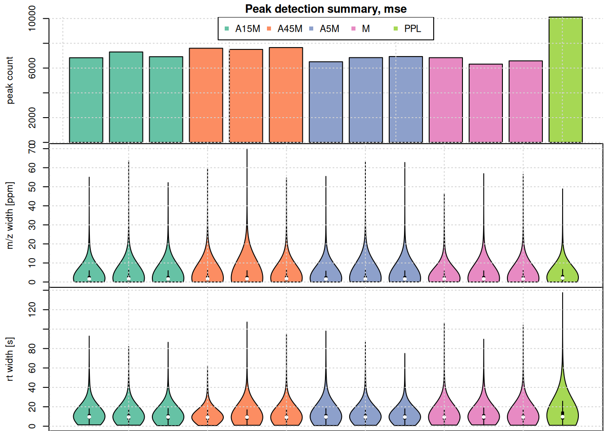
Alignment (Retention time correction)
We align samples using “Anchor Peaks” (peaks present in most samples).
- Group: First, we group peaks loosely to find “anchor peaks.”
- Align: We calculate the shift and adjust the RT.
Initial correspondence analysis
We test the important parameters, on our eics:
-
bw: bandwidth for the density estimation of peak retention times -
minFraction: minimum fraction of samples a peak must be present in to be considered an anchor peak.
pdp <- PeakDensityParam(
sampleGroups = rep(1, length(mse)),
bw = 2,
minFraction = 0.2,
binSize = 0.01,
ppm = 10)
col_peak <- col_sample[chromPeaks(eic_2)[, "sample"]]
plotChromPeakDensity(eic_2, param = pdp, col = col_sample, peakCol = col_peak,
peakBg = paste0(col_peak, 40))
grid()
With the used settings, in particular parameter bw, the present chromatographic peaks would be split into two separate LC-MS features (indicated with a grey rectangle in the lower panel).
pdp@bw <- 7
plotChromPeakDensity(eic_2, param = pdp, col = col_sample, peakCol = col_peak,
peakBg = paste0(col_peak, 40))
grid()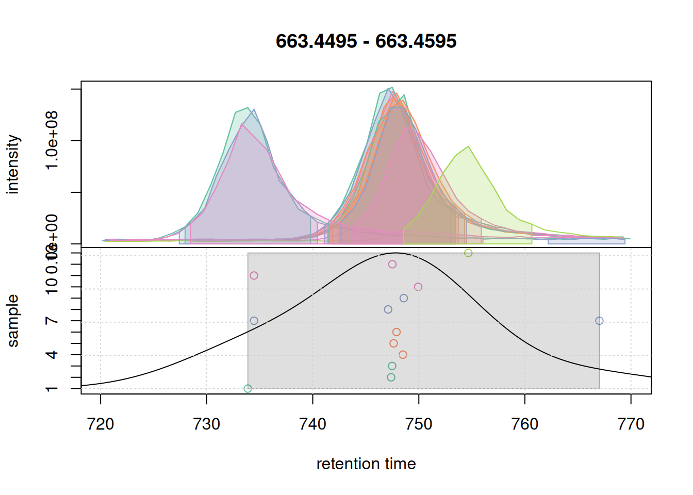
With a larger bandwidth, the chromatographic peaks are grouped into a single feature (grey rectangle). We thus set bw = 7 for the present data set
#' perform initial correspondence analysis to group chromatographic peaks
mse <- groupChromPeaks(mse, param = pdp)RT alignment using peak group
Here we need to pay attention to the following parameters:
-
minFraction: minimum fraction of samples a peak must be present in to be considered an anchor peak. -
span: smoothing parameter for the retention time correction function.Values of 0.5 usually work but in this case after doing some testing we needed to go as low as 0.1
#' configure and run retention time alignment
pgp <- PeakGroupsParam(
minFraction = 0.90,
span = 0.1)
mse <- adjustRtime(mse, param = pgp)Performing retention time alignment using 898 anchor peaks.Warning: Adjusted retention times had to be re-adjusted for some files to
ensure them being in the same order than the raw retention times. A call to
'dropAdjustedRtime' might thus fail to restore retention times of
chromatographic peaks to their original values. Eventually consider to increase
the value of the 'span' parameter.
#' visualize alignment results
plotAdjustedRtime(mse, col = paste0(col_sample, 80),
peakGroupsPch = 21, lwd = 2)
grid()
legend("topleft", col = col, lty = 1,
legend = names(col))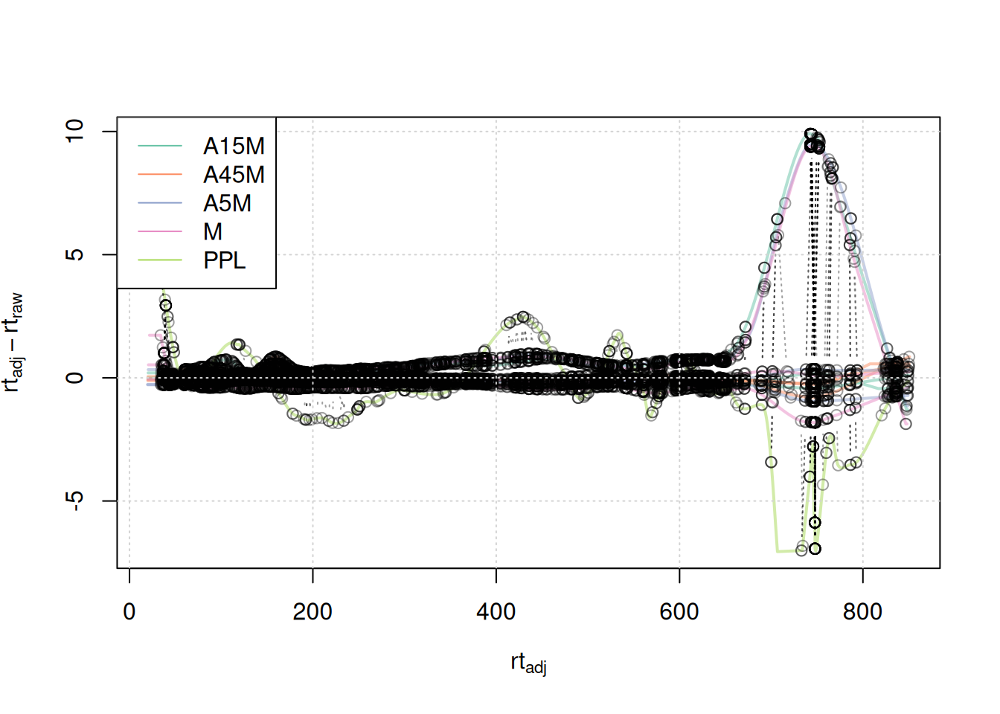
A stronger alignment can be observed for the retention time area from 750 to 800 seconds.
We evaluate also based on chosen eics:
eic_1_adj <- chromatogram(mse, rt = rtr_1, mz = mzr_1)Extracting chromatographic dataProcessing chromatographic peaks
par(mfrow = c(2, 1), mar = c(0, 4.3, 1.5, 0.1))
#' Setting peakType = "none" prevents identified chromatographic peaks to be
#' indicated in the plot.
plot(eic_1, col = paste0(col_sample, 80), lwd = 2, peakType = "none")
grid()
legend("topright", col = col, legend = names(col), lty = 1, lwd = 2)
plot(eic_1_adj, col = paste0(col_sample, 80), lwd = 2, peakType = "none")
grid()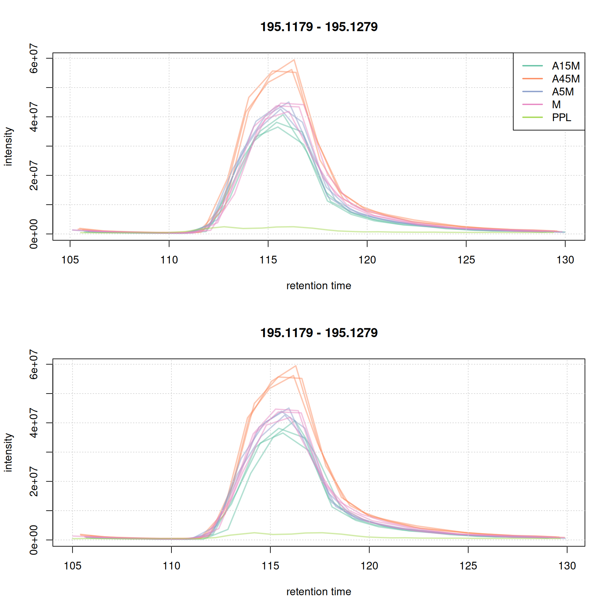
eic_2_adj <- chromatogram(mse, rt = rtr_2, mz = mzr_2)Extracting chromatographic dataProcessing chromatographic peaks
par(mfrow = c(2, 1), mar = c(0, 4.3, 1.5, 0.1))
plot(eic_2, col = paste0(col_sample, 80), lwd = 2, peakType = "none")
grid()
legend("topright", col = col, legend = names(col), lty = 1, lwd = 2)
plot(eic_2_adj, col = paste0(col_sample, 80), lwd = 2, peakType = "none")
grid()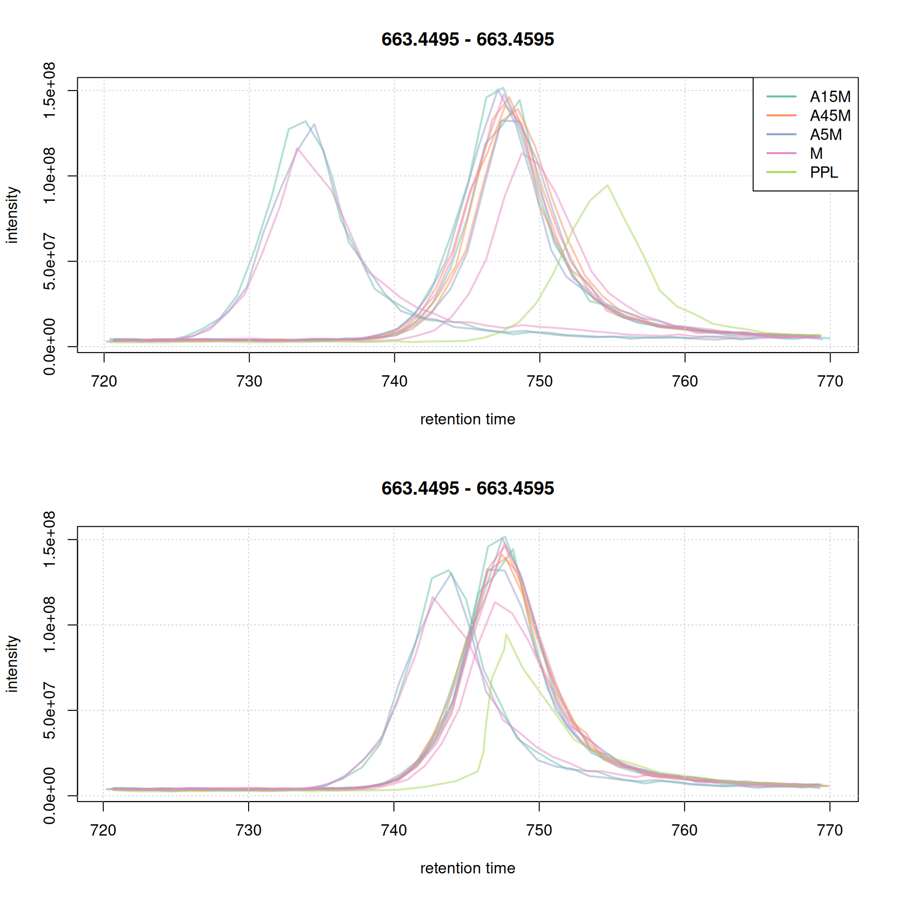
Note that in most cases it is not necessary that all samples are perfectly aligned. Some variation in retention time can be accounted for in the final correspondence analysis.
Feature Definition
Now that RT is aligned, we perform the final grouping of peaks into “Features”. We require a feature to be present in at least 67% of replicates within a sample group (i.e., 2 out of 3), this is precised in the sampleGroups parameter. As for now we leave the bw parameter at 7.
#' configure the *peak density* correspondence method
pdp <- PeakDensityParam(
sampleGroups = sampleData(mse)$sample_name,
minFraction = 0.67,
binSize = 0.01,
ppm = 10,
bw = 7)If we now check the problematic second eic again:
col_peak <- col_sample[chromPeaks(eic_2_adj)[, "sample"]]
plotChromPeakDensity(eic_2_adj, param = pdp, col = col_sample,
peakCol = col_peak, peakBg = paste0(col_peak, 40))
grid()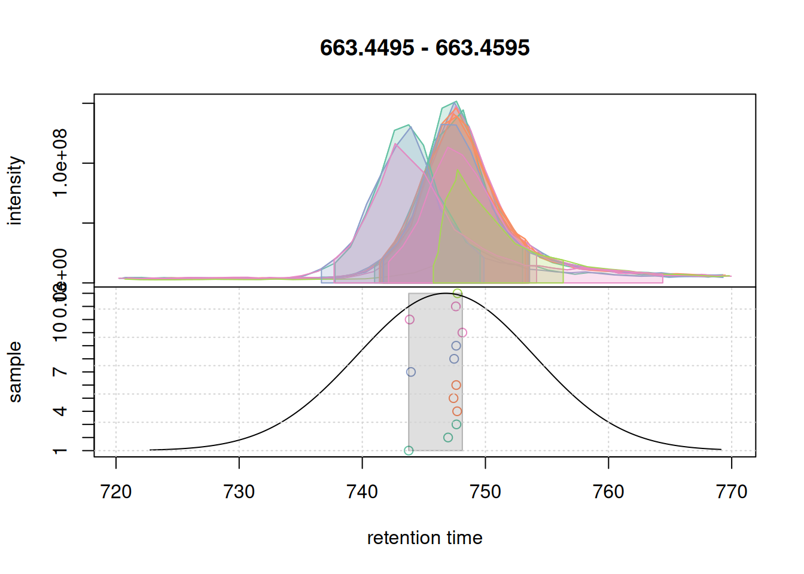
They are nicely grouped into a feature with some side peak included too.
However if we check more complex part of the data:
a <- chromatogram(mse, mz = mzr_1, rt = c(30, 150))Extracting chromatographic dataProcessing chromatographic peaks
col_peak <- col_sample[chromPeaks(a)[, "sample"]]
plotChromPeakDensity(a, param = pdp, col = col_sample,
peakCol = col_peak, peakBg = paste0(col_peak, 40))
grid()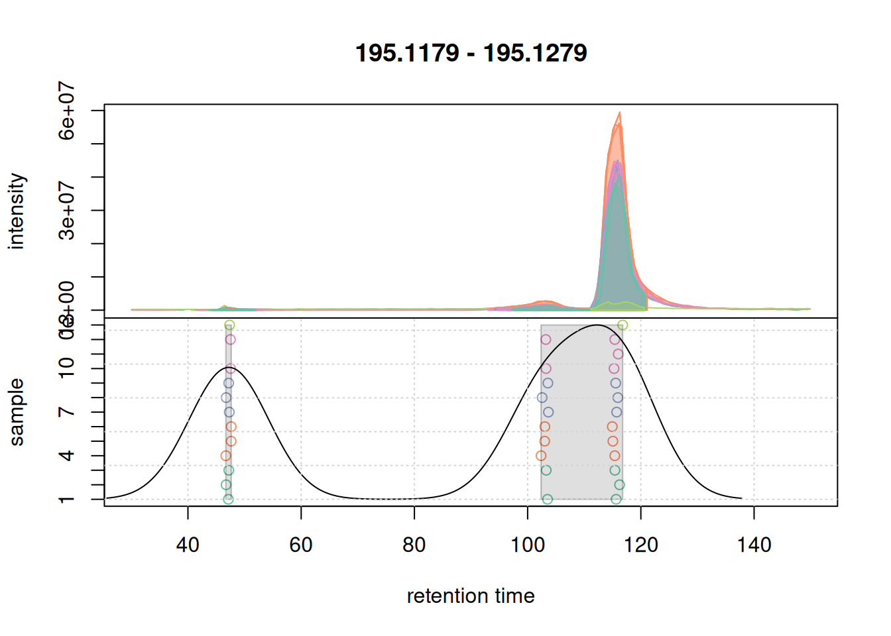
We are not separating features properly. Let’s try with a smaller bw:
pdp@bw <- 3
plotChromPeakDensity(a, param = pdp, col = col_sample,
peakCol = col_peak, peakBg = paste0(col_peak, 40))
grid()bw.We now successfully group the signals into distinct features. We thus set bw = 3 for the final feature definition.
#' perform correspondence analysis on the full data set
mse <- groupChromPeaks(mse, param = pdp)Checking results on overall data after processing is important as some algorithms will behave differently on eics and full data.
a <- chromatogram(mse, mz = mzr_1, rt = c(30, 150))Extracting chromatographic dataProcessing chromatographic peaksProcessing features
col_peak <- col_sample[chromPeaks(a)[, "sample"]]
plotChromPeakDensity(a, col = col_sample, peakCol = col_peak,
peakBg = paste0(col_peak, 40),
simulate = FALSE)
grid()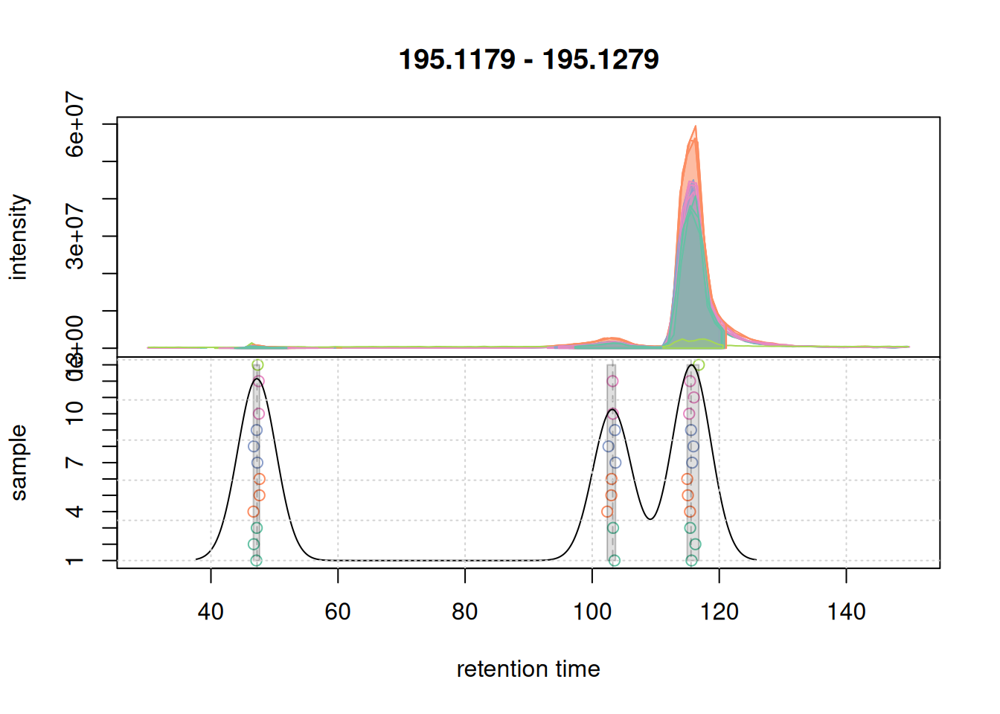
# Check feature table size
cat("Defined Features:", nrow(featureDefinitions(mse)))Defined Features: 14313This large number is mainly explain by the low minFraction parameter we used. which required a chromatographic peak to be detected in only 2 out of the 3 replicates for each individual sample to define, and combine them into, a feature.
Gap-filling
We can now extract the abundance estimates of all features with the featureValues() function.
fvals <- featureValues(mse, method = "sum")
colnames(fvals) <- sampleData(mse)$sample_desc
#' determine the number of missing values per sample and plot them
nas <- apply(fvals, MARGIN = 2, function(z) sum(is.na(z)))
barplot(nas, main = "Number of missing values", col = col_sample)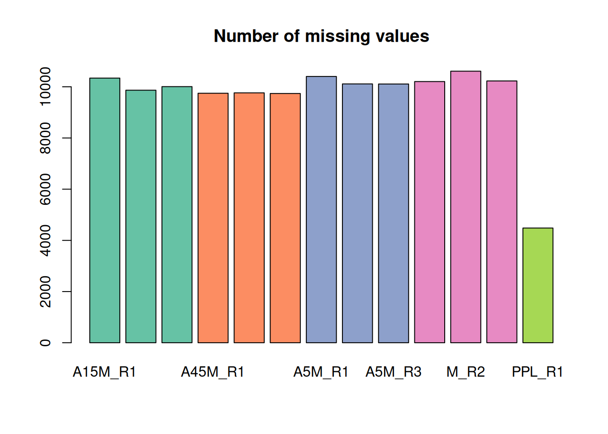
For the present data set there are a large number of missing values. A missing value indicates failure to detect a chromatographic peak for the m/z - retention time region of a feature in a sample. This can have multiple reasons:
- the compound might simply not be present in the sample
- the original signal is too noisy, too low in abundance, or does not fit the expected shape for the peak detection algorithm to identify a chromatographic peak.
Gap filling will check in samples with a missing value for a feature (i.e., in which no chromatographic peak was detected) and integrate all intensities measured within the m/z - retention time area of the feature.
#' configure and perform gap-filling
cpap <- ChromPeakAreaParam(minMzWidthPpm = 10)
mse <- fillChromPeaks(mse, param = cpap, chunkSize = nb_cores)We extract the feature values again and determine the number of missing values.
fvals <- featureValues(mse, method = "sum")
colnames(fvals) <- sampleData(mse)$sample_desc
#' determine the number of missing values per sample and plot them
nas <- apply(fvals, MARGIN = 2, function(z) sum(is.na(z)))
barplot(nas, main = "Number of missing values (after gap-filling)",
col = col_sample)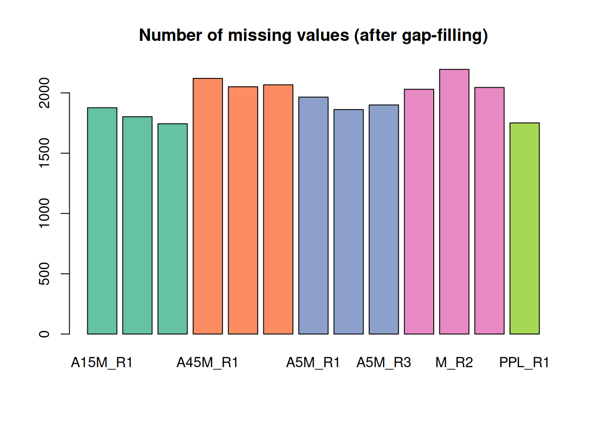
A considerable amount of values could thus be rescued.
MS2 Assignment & Export for GNPS
We associate MS2 spectra with the features we just defined and create a consensus spectrum for each feature
# 1. Extract MS2 associated with features
ms2 <- featureSpectra(mse)
# 2. Combine into Consensus Spectra
# Keep peaks present in at least 75% of spectra for that feature
ms2_cons <- combineSpectra(ms2, f = ms2$feature_id, peaks = "intersect",
minProp = 0.75, ppm = 10)Backend of the input object is read-only, will change that to an 'MsBackendMemory'
# 3. Clean up (remove spectra with < 2 peaks)
ms2_cons <- ms2_cons[lengths(ms2_cons) > 1]Additional spectra processing options
Note
The Spectra package would provide many additional functions and options to process, scale or clean spectra. As an alternative, through the SpectriPy package, it would also be possible to apply Python-based functionality from e.g. the matchms Python library to
Spectraobjects.
At last we visualize the select data (i.e. features with associated MS2 spectra) in the m/z - retention time space.
#' define the feature boundaries
fa <- featureArea(mse, features = ms2_cons$feature_id)
#' plot feature areas as rectangles
plot(NA, NA, xlim = range(fa[, c("rtmin", "rtmax")]),
ylim = range(fa[, c("mzmin", "mzmax")]),
xlab = "retention time", ylab = "m/z")
grid()
rect(xleft = fa[, "rtmin"], xright = fa[, "rtmax"],
ybottom = fa[, "mzmin"], ytop = fa[, "mzmax"],
border = "#00000080")
#' add precursor m/z and retention times of MS2
points(ms2_cons$rtime, ms2_cons$precursorMz,
cex = 0.5, col = "#0000ff40")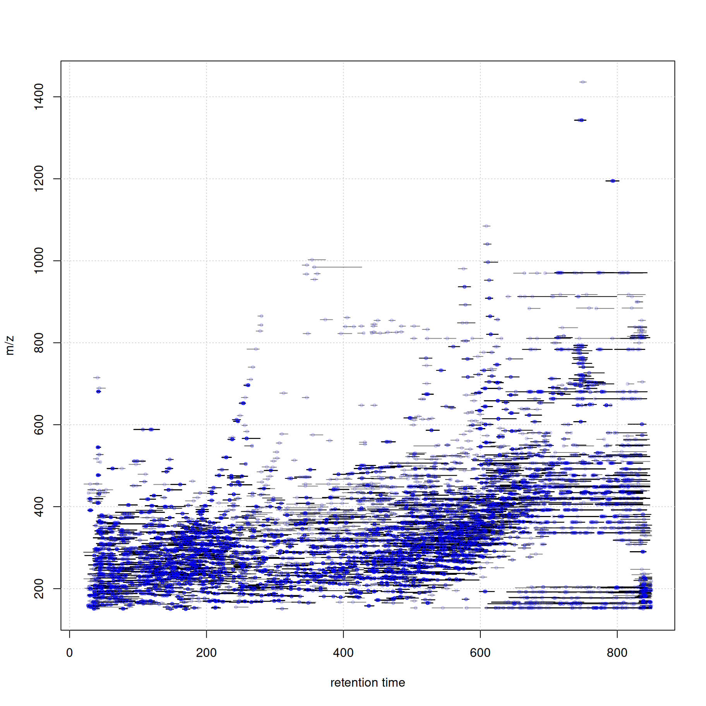
Finally, we export the two files required for GNPS FBMN.
# EXPORT 1: Feature Table (Quantification)
fvals <- featureValues(mse, method = "sum")
colnames(fvals) <- sampleData(mse)$sample_desc
# Get feature metadata (m/z, RT)
fdef <- featureDefinitions(mse)[, c("mzmed", "rtmed")]
fvals_export <- cbind(Row.names = rownames(fdef), fdef, fvals)
# Filter to only features that actually have MS2 spectra
fvals_export <- fvals_export[ms2_cons$feature_id, ]
write.table(fvals_export, "xcms_ms2_features.txt", sep = "\t", quote = FALSE,
row.names = FALSE)
# EXPORT 2: MGF File (Spectra)
# Helper function to format for GNPS
source("https://raw.githubusercontent.com/jorainer/xcms-gnps-tools/master/customFunctions.R")
ms2_cons_gnps <- formatSpectraForGNPS(ms2_cons)
export(ms2_cons_gnps, backend = MsBackendMgf(), file = "xcms_ms2_spectra.mgf")These 2 files can now be uploaded to GNPS2 for FBMN analysis.
Summary
- R-based data analysis workflows allow data set specific, tailored, analysis of LC-MS data.
- The xcms R package for LC-MS data preprocessing is tightly integrated into a broader ecosystem of R packages.
- The quarto system would also allow combining R and Python functionality into the same workflow document with the SpectriPy R-package translating between R and Python MS data structures.
Session information
R version 4.5.2 (2025-10-31)
Platform: x86_64-pc-linux-gnu
Running under: Ubuntu 24.04.3 LTS
Matrix products: default
BLAS: /usr/lib/x86_64-linux-gnu/openblas-pthread/libblas.so.3
LAPACK: /usr/lib/x86_64-linux-gnu/openblas-pthread/libopenblasp-r0.3.26.so; LAPACK version 3.12.0
locale:
[1] LC_CTYPE=en_US.UTF-8 LC_NUMERIC=C
[3] LC_TIME=en_US.UTF-8 LC_COLLATE=en_US.UTF-8
[5] LC_MONETARY=en_US.UTF-8 LC_MESSAGES=en_US.UTF-8
[7] LC_PAPER=en_US.UTF-8 LC_NAME=C
[9] LC_ADDRESS=C LC_TELEPHONE=C
[11] LC_MEASUREMENT=en_US.UTF-8 LC_IDENTIFICATION=C
time zone: Etc/UTC
tzcode source: system (glibc)
attached base packages:
[1] stats4 stats graphics grDevices utils datasets methods
[8] base
other attached packages:
[1] vioplot_0.5.1 zoo_1.8-14 sm_2.2-6.0
[4] pheatmap_1.0.13 RColorBrewer_1.1-3 MsBackendMgf_1.18.0
[7] xcms_4.8.0 Spectra_1.20.0 BiocParallel_1.44.0
[10] S4Vectors_0.48.0 BiocGenerics_0.56.0 generics_0.1.4
[13] MsExperiment_1.12.0 ProtGenerics_1.42.0
loaded via a namespace (and not attached):
[1] DBI_1.2.3 rlang_1.1.6
[3] magrittr_2.0.4 clue_0.3-66
[5] MassSpecWavelet_1.76.0 matrixStats_1.5.0
[7] compiler_4.5.2 vctrs_0.6.5
[9] reshape2_1.4.5 stringr_1.6.0
[11] pkgconfig_2.0.3 MetaboCoreUtils_1.18.1
[13] crayon_1.5.3 fastmap_1.2.0
[15] XVector_0.50.0 rmarkdown_2.30
[17] preprocessCore_1.72.0 purrr_1.2.0
[19] xfun_0.54 MultiAssayExperiment_1.36.1
[21] jsonlite_2.0.0 progress_1.2.3
[23] DelayedArray_0.36.0 parallel_4.5.2
[25] prettyunits_1.2.0 cluster_2.1.8.1
[27] R6_2.6.1 stringi_1.8.7
[29] limma_3.66.0 GenomicRanges_1.62.0
[31] Rcpp_1.1.0 Seqinfo_1.0.0
[33] SummarizedExperiment_1.40.0 iterators_1.0.14
[35] knitr_1.50 IRanges_2.44.0
[37] BiocBaseUtils_1.12.0 Matrix_1.7-4
[39] igraph_2.2.1 tidyselect_1.2.1
[41] abind_1.4-8 yaml_2.3.11
[43] doParallel_1.0.17 codetools_0.2-20
[45] affy_1.88.0 lattice_0.22-7
[47] tibble_3.3.0 plyr_1.8.9
[49] Biobase_2.70.0 S7_0.2.1
[51] evaluate_1.0.5 pillar_1.11.1
[53] affyio_1.80.0 BiocManager_1.30.27
[55] MatrixGenerics_1.22.0 foreach_1.5.2
[57] MSnbase_2.36.0 MALDIquant_1.22.3
[59] ncdf4_1.24 hms_1.1.4
[61] ggplot2_4.0.1 scales_1.4.0
[63] glue_1.8.0 MsFeatures_1.18.0
[65] lazyeval_0.2.2 tools_4.5.2
[67] mzID_1.48.0 data.table_1.17.8
[69] QFeatures_1.20.0 vsn_3.78.0
[71] mzR_2.44.0 fs_1.6.6
[73] XML_3.99-0.20 grid_4.5.2
[75] impute_1.84.0 tidyr_1.3.1
[77] MsCoreUtils_1.22.1 PSMatch_1.14.0
[79] cli_3.6.5 S4Arrays_1.10.0
[81] dplyr_1.1.4 AnnotationFilter_1.34.0
[83] pcaMethods_2.2.0 gtable_0.3.6
[85] digest_0.6.39 SparseArray_1.10.3
[87] farver_2.1.2 htmltools_0.5.8.1
[89] lifecycle_1.0.4 statmod_1.5.1
[91] MASS_7.3-65